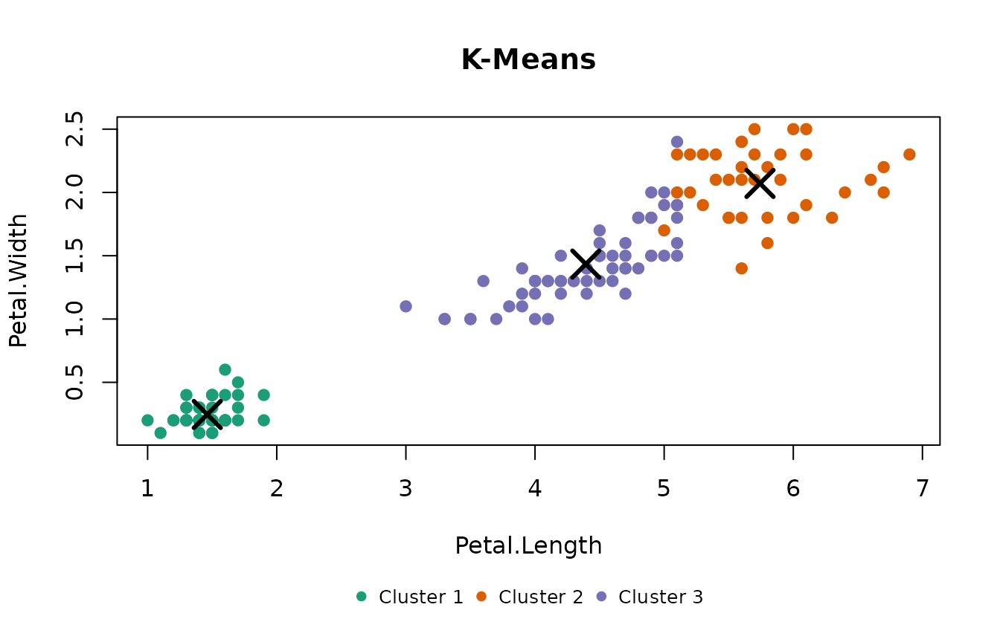
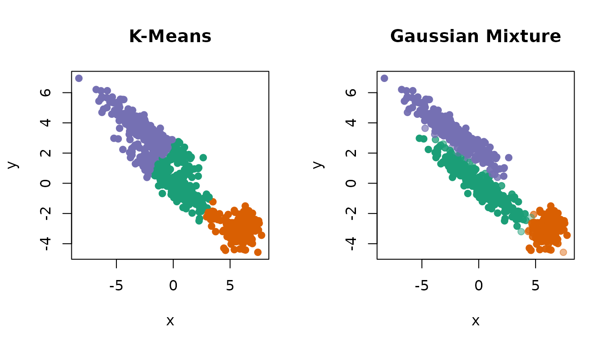
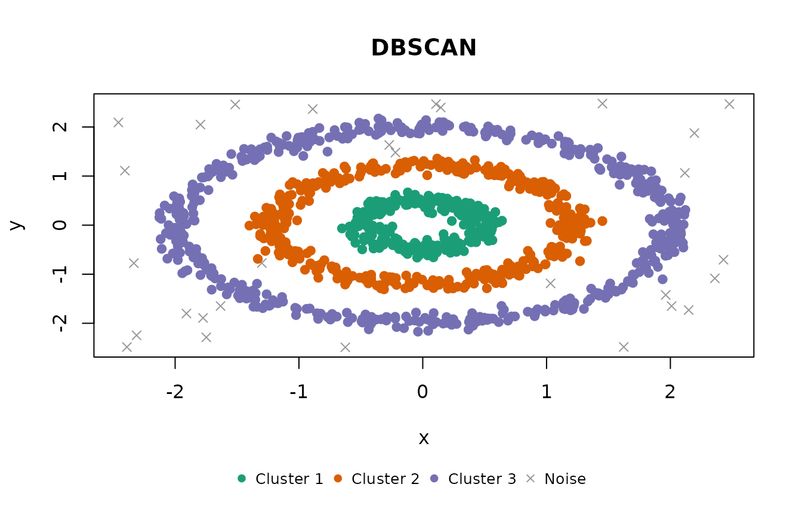
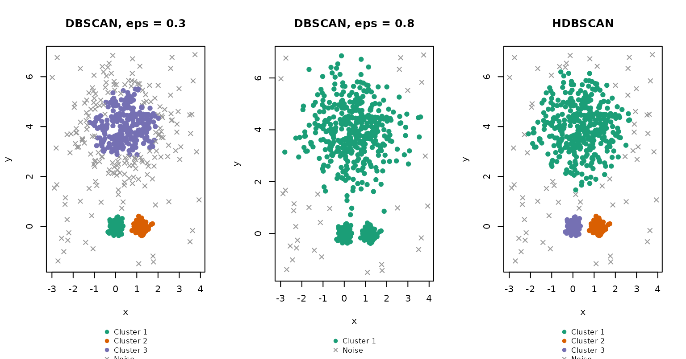
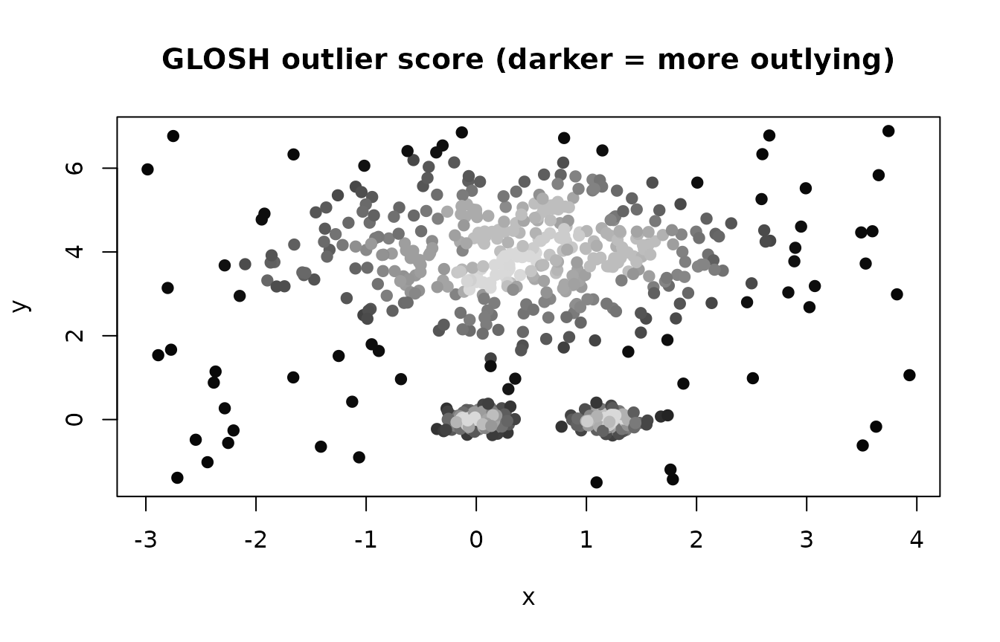
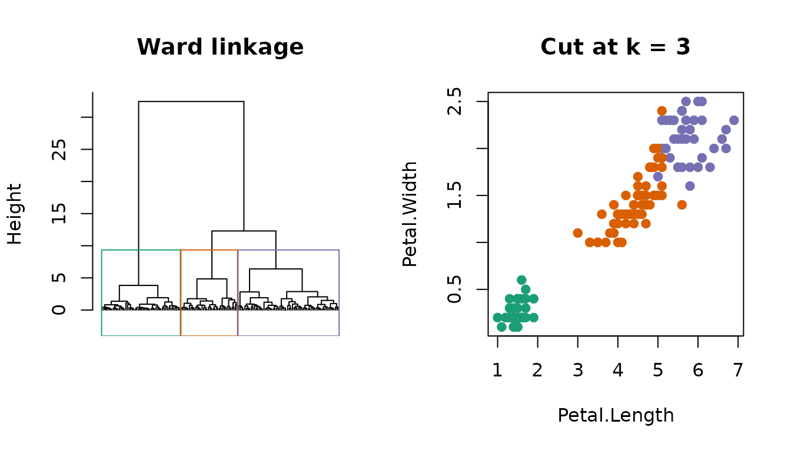
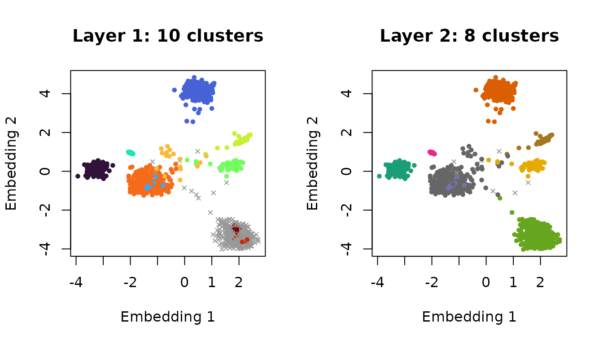

shoal provides six clustering algorithms behind one interface. Each
takes a numeric matrix or data frame, returns an object with the shared
shoal_clustering class, and prints and plots the same way.
Noise points, where an algorithm has them, are NA in the
cluster vector.
This vignette introduces each algorithm in turn: what it assumes, the parameters that matter, and what its clusters look like on data chosen to show its character.
What every result has in common
x <- as.matrix(iris[, 1:4])
fit <- shoal_kmeans(x, k = 3L)
fit$cluster[1:10]
#> [1] 1 1 1 1 1 1 1 1 1 1
fit$n_clusters
#> [1] 3
fit$n_noise
#> [1] 0
fit$params
#> $k
#> [1] 3
#>
#> $init
#> [1] "kmeans++"
#>
#> $n_runs
#> [1] 10
#>
#> $seed
#> [1] 1data holds the matrix the model was fitted to, so
plot() needs nothing else. With two columns it draws a
scatter plot; with more, a scatter plot matrix, or a chosen pair via
xcol and ycol. Colours come from
shoal_palette(), and col and pch
can be given directly to colour points by something other than their
cluster, as some of the figures below do.
k-means: shoal_kmeans()
Partitions the data into k compact clusters of similar
spread by minimising the within-cluster sum of squares. It is fast and
predictable, and the right baseline when clusters are roughly spherical
and you know how many to expect. It is stochastic in its initialisation;
seed controls that, and R’s own random number generator has
no effect on it.
km <- shoal_kmeans(x, k = 3L, n_runs = 10L, seed = 1L)
km
#>
#> ── K-Means Clustering
#> Parameters: k = 3, init = kmeans++, n_runs = 10, seed = 1
#> Clusters: 3, Noise points: 0
#> Within-cluster sum of squares: 78.851
#> Cluster sizes: 50, 38, 62The centroids are the model. Overlaying them shows what k-means actually found: three centres, with every point assigned to the nearest one.
plot(km, xcol = "Petal.Length", ycol = "Petal.Width")
points(km$centroids[, "Petal.Length"], km$centroids[, "Petal.Width"],
pch = 4, cex = 2.5, lwd = 3)
Because it has cluster centres, it can assign new observations.
Gaussian mixture: shoal_gmm()
Fits k multivariate Gaussians by
expectation-maximisation. Each component has its own covariance matrix,
so clusters can be elongated and tilted, and correlated or differently
scaled features are handled without pre-scaling. Every observation gets
a probability of belonging to each component; cluster is
the most likely one and posterior holds the full
matrix.
The difference from k-means is easiest to see on clusters that are not round. Two long, parallel ellipses and a round blob:
ellipse <- function(n, centre, angle, sx, sy) {
pts <- cbind(rnorm(n, sd = sx), rnorm(n, sd = sy))
rot <- matrix(c(cos(angle), sin(angle), -sin(angle), cos(angle)), 2)
sweep(pts %*% rot, 2, centre, "+")
}
set.seed(3)
angle <- pi / 6
ell <- rbind(
ellipse(250, c(0, 0), angle, 2.5, 0.4),
ellipse(250, c(-3.5 * sin(angle), 3.5 * cos(angle)), angle, 2.5, 0.4),
ellipse(150, c(6, -3), 0, 0.7, 0.7)
)
colnames(ell) <- c("x", "y")
gm <- shoal_gmm(ell, k = 3L)
gm
#>
#> ── Gaussian Mixture Clustering
#> Parameters: k = 3, init = kmeans, n_runs = 1, seed = 1
#> Clusters: 3, Noise points: 0
#> Log-likelihood: -2362.75, BIC: 4835.61
#> Mixing proportions: 0.377, 0.231, 0.393k-means cuts across the two ellipses, because its boundaries are
always midway between centres. The mixture follows their shape. In the
right-hand panel, points are drawn fainter the less certain their
assignment, using the posterior and the col argument.
par(mfrow = c(1, 2))
km_ell <- shoal_kmeans(ell, k = 3L)
plot(km_ell, col = shoal_palette(3)[km_ell$cluster], pch = 19)
confidence <- apply(gm$posterior, 1, max)
base <- col2rgb(shoal_palette(3)[gm$cluster]) / 255
alpha <- pmin(1, 0.15 + 0.85 * (confidence - 1 / 3) / (2 / 3))
plot(gm, col = rgb(base[1, ], base[2, ], base[3, ], alpha), pch = 19)
A fitted mixture has a logLik() method, so
AIC() and BIC() work on it directly; see Choosing the number of clusters. Only full
covariance matrices are supported.
DBSCAN: shoal_dbscan()
Grows clusters from points that have at least
min_samples neighbours within radius eps, and
labels everything else noise. Clusters can be any shape, which no
centroid-based method can offer. The bundled rings data,
three concentric rings plus scattered noise, is the standard case.
db <- shoal_dbscan(rings, eps = 0.2, min_samples = 5L)
db
#>
#> ── DBSCAN Clustering
#> Metric: "euclidean"
#> Parameters: eps = 0.2, min_samples = 5
#> Clusters: 3, Noise points: 29
plot(db)
eps is on the scale of the data, so a value never
carries between datasets. metric = "cosine" is available
for directional data.
HDBSCAN: shoal_hdbscan()
DBSCAN’s limitation is that eps is one global threshold,
so every cluster has to have the same density. HDBSCAN removes it by
building the hierarchy of clusterings across every density at once and
keeping the most stable ones. There is no eps;
min_cluster_size sets the smallest group worth calling a
cluster and min_samples how conservative the density
estimate is.
Two tight blobs beside one large diffuse cloud, with uniform noise
around them, shows the difference. No single eps serves
both densities: small enough for the blobs, it keeps only the core of
the cloud and calls the rest noise; large enough for the cloud,
everything merges into one cluster.
set.seed(4)
vd <- rbind(
cbind(rnorm(150, 0.0, 0.15), rnorm(150, 0, 0.15)),
cbind(rnorm(150, 1.2, 0.15), rnorm(150, 0, 0.15)),
cbind(rnorm(400, 0.5, 1.0), rnorm(400, 4, 1.0)),
cbind(runif(60, -3, 4), runif(60, -2, 7))
)
colnames(vd) <- c("x", "y")
hdb <- shoal_hdbscan(vd, min_cluster_size = 30L, min_samples = 10L)
hdb
#>
#> ── HDBSCAN Clustering
#> Metric: "euclidean"
#> Parameters: alpha = 1, min_samples = 10, min_cluster_size = 30, boruvka = TRUE
#> Clusters: 3, Noise points: 64
#> GLOSH outlier scores: median 0.281, max 0.977
par(mfrow = c(1, 3), mar = c(4, 4, 3, 1))
plot(shoal_dbscan(vd, eps = 0.3, min_samples = 10L), main = "DBSCAN, eps = 0.3")
plot(shoal_dbscan(vd, eps = 0.8, min_samples = 10L), main = "DBSCAN, eps = 0.8")
plot(hdb, main = "HDBSCAN")
HDBSCAN also returns a GLOSH outlier score for every observation, near 0 in the core of a cluster and near 1 far from any. Drawn as a shade rather than a cluster colour, it grades the whole dataset by how much it belongs.
plot(hdb, col = grey(0.85 * (1 - hdb$outlier_scores)), pch = 19,
main = "GLOSH outlier score (darker = more outlying)")
Both density algorithms rely on a spatial index that degrades as the number of columns grows. For wide data, either reduce the dimension first (see the UMAP vignette) or, for embedding vectors, use EVoC.
Hierarchical clustering: shoal_hclust()
Merges observations bottom-up into a dendrogram, which can then be
cut at any number of clusters without refitting. It takes a
dist object, which shoal_dist() computes in
Rust, or raw data. The result is a standard hclust, so
cutree(), plot(), rect.hclust()
and as.dendrogram() all apply.
d <- shoal_dist(x)
hc <- shoal_hclust(d, method = "ward")
hc
#>
#> Call:
#> shoal_hclust(d = d, method = "ward")
#>
#> Cluster method : ward
#> Distance : euclidean
#> Number of objects: 150
groups <- cutree(hc, k = 3)
table(groups, iris$Species)
#>
#> groups setosa versicolor virginica
#> 1 50 0 0
#> 2 0 49 15
#> 3 0 1 35
par(mfrow = c(1, 2))
plot(hc, labels = FALSE, hang = -1, main = "Ward linkage", xlab = "", sub = "")
rect.hclust(hc, k = 3, border = shoal_palette(3))
plot(x[, "Petal.Length"], x[, "Petal.Width"], col = shoal_palette(3)[groups],
pch = 19, xlab = "Petal.Length", ylab = "Petal.Width", main = "Cut at k = 3")
Seven linkage methods are available. Note that "ward" is
R’s "ward.D2", and that "centroid" and
"median" take plain distances where
stats::hclust() expects squared ones; see
?shoal_hclust.
EVoC: shoal_evoc()
For embedding vectors: rows that are directions in a high-dimensional
space, such as the output of a text or image model. EVoC builds a
nearest-neighbour graph under cosine distance, learns a compact node
embedding from it, and density-clusters that embedding at several
granularities at once. All layers are returned; layer picks
which one populates cluster, by default the most
persistent.
Eight topics of unequal size as directions in 48 dimensions, plus 100 scattered points:
set.seed(1)
sizes <- c(400, 300, 250, 200, 150, 100, 60, 40)
centres <- matrix(runif(length(sizes) * 48, -1, 1) * 0.6, nrow = length(sizes))
emb <- rbind(
centres[rep(seq_along(sizes), times = sizes), ] +
matrix(rnorm(sum(sizes) * 48, sd = 0.1), ncol = 48),
matrix(runif(100 * 48, -1, 1) * 0.6, ncol = 48)
)
ev <- shoal_evoc(emb, min_cluster_size = 15L)
ev
#>
#> ── EVoC Clustering
#> Metric: "cosine"
#> Parameters: n_neighbors = 15, noise_level = 0.5, min_cluster_size = 15,
#> min_samples = 5, n_epochs = 50, seed = 1
#> Clusters: 8, Noise points: 7
#> Layers (finest first, ✔ = selected):
#> 1: 10 clusters, 371 noise, persistence 0
#> ✔ 2: 8 clusters, 7 noise, persistence 346.8The clusters cannot be drawn in 48 dimensions, but the node embedding EVoC learned on the way is on the result. Its first two dimensions show every layer: the finest one, fragmented and full of noise, and the persistent one that was selected.
draw_layer <- function(i) {
layer <- ev$layers[[i]]
k <- length(unique(layer[!is.na(layer)]))
plot(ev$embedding[, 1:2],
col = ifelse(is.na(layer), "grey60", shoal_palette(k)[layer]),
pch = ifelse(is.na(layer), 4, 19), cex = 0.6,
xlab = "Embedding 1", ylab = "Embedding 2",
main = sprintf("Layer %d: %d clusters", i, k))
}
par(mfrow = c(1, 2))
draw_layer(1)
draw_layer(ev$layer)
EVoC is the wrong tool for ordinary tabular data: it assumes cosine
geometry and is calibrated for thousands to millions of rows. The
upstream default min_cluster_size = 5 over-fragments small
collections, so raise it first.
Choosing the number of clusters
shoal_metrics() computes the Calinski-Harabasz index
(higher is better) and Davies-Bouldin index (lower is better) for any
partition, from the data. shoal_silhouette() scores every
observation from a distance matrix, and works for any cluster shape. A
fitted mixture’s BIC() penalises parameters, so it has an
interior optimum where k-means’ inertia does not.
ks <- 2:8
indices <- do.call(rbind, lapply(ks, function(k) {
shoal_metrics(shoal_kmeans(x, k = k))
}))
indices$bic <- vapply(ks, function(k) BIC(shoal_gmm(x, k = k)), numeric(1))
indices$silhouette <- vapply(ks, function(k) {
attr(shoal_silhouette(d, shoal_kmeans(x, k = k)), "avg_width")
}, numeric(1))
indices
#> n k calinski_harabasz davies_bouldin bic silhouette
#> 1 150 2 513.9245 0.4042928 574.0178 0.6810462
#> 2 150 3 561.6278 0.6619715 580.8594 0.5528190
#> 3 150 4 530.4871 0.7757009 629.7790 0.4974552
#> 4 150 5 495.5415 0.8059652 670.0892 0.4887489
#> 5 150 6 473.8506 0.9141580 714.9977 0.3648340
#> 6 150 7 440.3742 0.9777679 755.3227 0.3348415
#> 7 150 8 438.7310 0.9681028 805.4316 0.3477685
par(mfrow = c(1, 4), mar = c(4, 4, 3, 1))
for (m in c("calinski_harabasz", "davies_bouldin", "bic", "silhouette")) {
plot(ks, indices[[m]], type = "b", pch = 19, xlab = "k", ylab = "", main = m)
}Two clusters or three: the indices disagree, and that is the right answer, because two of the species overlap. shoal reports the evidence and leaves the decision to you.
Which algorithm?
| You have | Start with |
|---|---|
Compact clusters, a known k
|
shoal_kmeans() |
| Elliptical clusters, or you want probabilities | shoal_gmm() |
| Arbitrary shapes at one density | shoal_dbscan() |
| Arbitrary shapes at varying density | shoal_hdbscan() |
A dendrogram, or cuts at several k
|
shoal_hclust() |
| Embedding vectors, thousands of rows or more | shoal_evoc() |